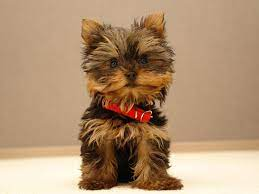
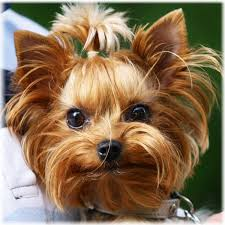
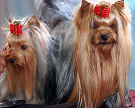

Терьер, или йорк (англ. yorkshire terrier), — порода декоративных собак, выведенная в Англии, в графстве Йоркшир в конце XIX века, на основе таких пород как манчестер-терьер, скайтерьер.
В настоящее время йоркширский терьер — одна из самых популярных комнатно-декоративных пород собак
- история породы
- шерсть
- длинна шерсти
- цвет
Родиной йоркширского терьера являются графства Йоркшир и Ланкашир в северной Англии. Его возможным предком называют уотерсайдского терьера. Эта порода была популярна в XVIII—XIX веках в Йоркшире и описывалась как Маленькая, серо-голубая собака с полудлинной шерстью». Этих собак держали крестьяне, так как им было запрещено заводить больших собак, чтобы они не браконьерствовали на землях, принадлежавших знати. Небольшие собачки охраняли дома от грызунов и сопровождали своих хозяев в торговых поездках вдоль рек и каналов (отсюда и название).

Некоторые специалисты называют в числе предков йорков и мальтийских болонок, хотя они значительно отличаются от них: у мальтезе висячие уши и белый окрас. Считается, что йорков скрещивали с болонками, чтобы улучшить качество шерсти, структуру волоса и получить шелковистость. В пользу этой теории говорит то, что у светлых йорков часто очень хорошее качество шерсти.
В конце XVIII века с началом индустриализации многие люди в поисках работы переезжали в города на западе графства, приезжали работники также и из Шотландии. С собой они привозили своих собак, которых в то время называли «Шотландскими терьерами» (англ. scotch terrier), впоследствии среди них были выделены такие породы как пейсли-терьер (англ.), клайдесдейл-терьер, каирский терьер (англ.), скай терьер. Вероятно, эти породы участвовали в выведении йоркширского терьера. Наиболее близки к современному йорку были пейсли-терьер и клайдесдейл-терьер, которые так и не были признаны Кеннел-Клубом как отдельные породы, и со временем их разведение было прекращено
В Манчестере также был свой вид терьеров — Манчестерский терьер. Заводчикам удалось получить его разновидность с мягкой, длинной и шелковистой шерстью. Все эти породы и стали предками йоркширского терьера.
Йоркширский терьер — одна из самых маленьких пород собак. Согласно стандартам FCI и AKC, вес йорка не должен превышать 3,2 кг, минимальный вес или рост стандартом не ограничен. Общий вид так описан в стандарте: длинношёрстная собака, шерсть спадает абсолютно прямо и равномерно по бокам, пробор проходит от мочки носа до кончика хвоста. Очень компактная и изящная, осанка подчёркнуто горделивая и важная. Общее впечатление сильного с хорошими пропорциями корпуса животного
Шерсть

Йоркширский терьер — длинношёрстная порода и не имеет подшёрстка. Это значит, что они практически не линяют. Их шерсть похожа на волосы человека в том, что она постоянно растёт и редко выпадает (только при расчёсывании или повреждении). Благодаря структуре своей шерсти йорки реже вызывают у людей аллергию.
Цвет шерсти у многих йорков не соответствует принятому стандарту; жёлто-коричневый цвет шерсти может варьироваться от очень светлого до тёмно-коричневого, а шерсть на основной части тела может быть чёрного или серебристого-серого оттенков.
Специалисты отмечают зависимость между структурой шерсти и окрасом. Слишком тёмные собаки редко имеют правильную шелковистую шерсть, обычно она волнистая и, как говорят, «пухлявая». Светлые собаки имеют более правильную текстуру, но их шерсть может пожелтеть со временем. Считается, что самой сложной задачей является получение насыщенного тёмно-стального но именно при таком окрасе собаки имеют структуру шерсти, наилучшим образом соответствующую стандарту и производящую наилучшее впечатление.
Сейчас многие заводчики придают гораздо большее значение качеству шерсти по сравнению с окрасом, таким образом им удаётся вывести собак с равномерным окрасом и правильной структурой шерсти.Также существуют «дизайнерские» разновидности
Достоинства собаки

- йорка легко содержать в городе
- Йорка легко взять с собой в любую поездку
- Йорки обладают достаточно крепким здоровьем
- Он доброжелателен и с людьми